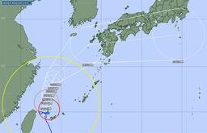
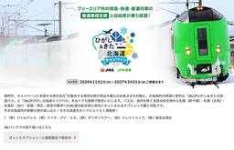
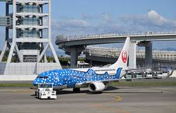

Aviation Wire
https://www.aviationwire.jp
航空経済紙「Aviation Wire」は、航空機やエアライン、空港、官公庁に関する情報や各種統計などをお届けして参ります。
フィード
空自、墜落グローバルホークの引き揚げ終了 沿岸捜索は継続
Aviation Wire
航空自衛隊は10月23日、鳥取県沖で9月15日に墜落した無人偵察機RQ-4B「グローバルホーク」の機体引き揚げ作業を終了したと発表した。現場海域で10月2日に始めた作業を23日で終えた。機体の一部は回収したが、全体の回 […]
2時間前
シンガポール航空、機内エンタメ刷新でファーストクラス32インチ4Kモニター 777XやA350に
Aviation Wire
シンガポール航空（SIA/SQ）は、機内エンターテインメント（IFE）システム「クリスワールド」の次世代仕様を現地時間10月22日に発表した。4K高解像度タッチスクリーンや立体音響、乗客が持参したBluetooth対応 […]
5時間前

台風30号、24日は欠航69便 JAL・ANAなど6社8800人影響
Aviation Wire
大型の台風30号の影響で、10月24日の空の便は日本航空（JAL/JL、9201）と全日本空輸（ANA/NH）など航空6社で国内線56便、国際線13便の計69便が欠航し、確認できた分で約8800人に影響が出る見通し。前 […]
9時間前

JALとJR北海道、道東旅行にJR乗り放題パス 11月から周遊企画
Aviation Wire
日本航空（JAL/JL、9201）とJR北海道（北海道旅客鉄道）は、11月1日出発分から「ひがし＆きた北海道キャンペーン」を今年度も実施する。2027年3月31日帰着分までを対象に、JALグループ便の航空券と宿泊に、北 […]
21時間前

JTAの19年ぶり伊丹就航、国交省が許可 10/25から那覇2往復
Aviation Wire
国土交通省航空局（JCAB）は10月23日、日本航空（JAL/JL、9201）グループで沖縄を拠点とする日本トランスオーシャン航空（JTA/NU）が申請していた伊丹空港への就航を、同日付で許可した。国土交通大臣の諮問機 […]
1日前
成田空港の国際線、発着回数初の週4000回超えへ 中国旅客便34％減＝冬ダイヤ計画
Aviation Wire
成田空港を運営する成田国際空港会社（NAA）は10月22日、2026年冬ダイヤ（10月25日から27年3月27日まで）の運航計画を発表した。国内線と国際線を合わせた総発着回数は前年同期比4％増の週4945回で、開港以来 […]
1日前
中部空港、台湾便数が過去最多に 中国本土は7割減＝冬ダイヤ計画
Aviation Wire
中部空港（セントレア）を運営する中部国際空港会社は10月23日、2026年冬ダイヤ（10月25日から27年3月27日まで）の運航計画を発表した。11月1日を基準とした期初の国際線旅客便は週265便（往復）で、276便だ […]
1日前
大韓航空、仁川貨物ターミナル改修完了 処理能力25％以上増へ
Aviation Wire
大韓航空（KAL/KE）は、韓国の仁川国際空港にある貨物ターミナルの大規模改修を9月に完了した。コンテナ・パレットの搬出能力を従来の1時間あたり18個から30個に引き上げた。ターミナル全体の貨物処理能力も、従来より25 […]
1日前
神戸空港、トリニティ航空12/18初就航 ソウル線1日6往復に＝冬ダイヤ
Aviation Wire
神戸空港を管理する神戸市が発表した国際チャーター便の運航計画によると、冬ダイヤ（10月25日から27年3月27日）の就航先は韓国2路線（ソウル・清州）と台湾3路線（台北・台中・高雄）の計5路線で、夏ダイヤの運航計画から […]
1日前
9月訪日客、2カ月連続前年割れ 航空券上昇・台風欠航が影響
Aviation Wire
日本政府観光局（JNTO）の訪日外客数推計値によると、2026年9月の訪日客数は前年同月比5.0％減の310万3700人で、2カ月連続で前年同月を下回った。中国の大幅減のほか、中東情勢による航空券価格の上昇や、台風によ […]
1日前